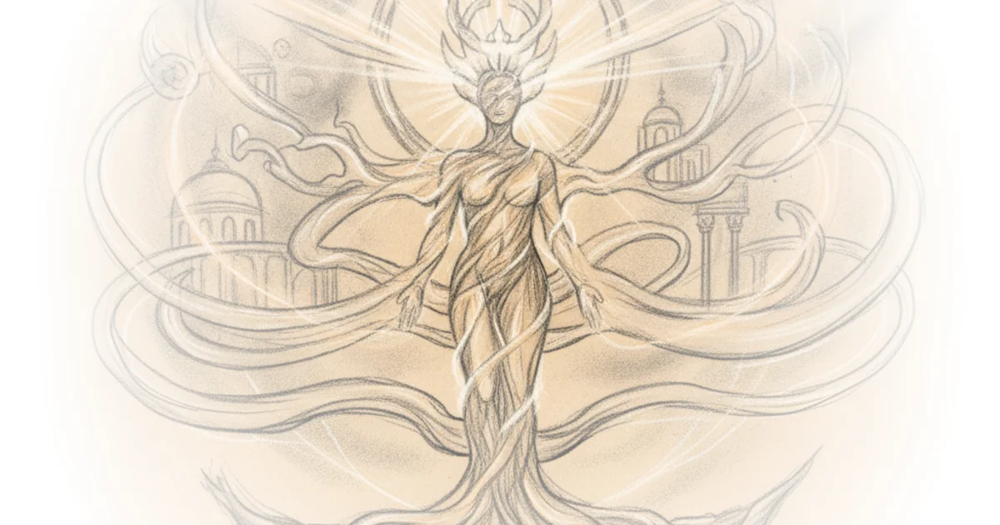

Scot McKnight does something rare in biblical scholarship: he treats an ancient theological poem not as a dry doctrinal statement, but as the living heartbeat of early Christian identity and ecological responsibility. The piece's most striking move is reframing the cosmic scope of Colossians 1—not merely as high theology for scholars—but as a direct challenge to how we treat the planet today.
The Hymn Hidden in Plain Sight
McKnight begins by grounding this dense passage in its likely original context: it was probably sung. He notes that "today's reading was an early Christian hymn. Or, a Christian hymn that Paul edited." This isn't just academic speculation; he anchors it in historical record, citing Pliny the Younger's observation from around 112 AD that Christians were "in the habit of meeting on a certain fixed day before it was light, when they sang in alternate verses a hymn to Christ as to a god."

The argument gains traction because McKnight refuses to let the text remain abstract. He walks us through Ralph Martin's criteria for identifying early Christian songs—rhythmical style, unusual vocabulary, dense theology—and shows how Colossians 1:15-20 fits every single one. This isn't just about literary analysis; it's about recovering a lost mode of faith.
"If someone was assigning early songs to their subject matter, as is done in our hymnbooks, this song in Colossians 1:15-20 would be under the 'Jesus Christ' heading."
This framing works because it reminds readers that theology wasn't just thought—it was sung, felt, and performed. The early church didn't separate doctrine from doxology.
Wisdom Made Flesh
The core of McKnight's argument hinges on a bold identification: Jesus is the personification of Jewish Wisdom. He writes, "The song in today's reading identifies the wisdom of God with Jesus himself." This isn't a minor theological nuance; it's a radical claim that elevates Jesus from prophet to Creator.
McKnight leans heavily on scholar John Balchin's summary of Jewish wisdom traditions—wisdom as creator, agent of revelation, and savior—and shows how Paul fuses these attributes onto Christ. "All this would fuse together in a new pattern when a real person eventually did emerge whose status and origin could only be described in terms like these," McKnight observes.
The brilliance here is in the historical contrast he draws. He points out the irony: an ordinary Jewish man, crucified as a criminal, is now hailed as the one through whom "all things were created... visible and invisible, whether thrones or powers or rulers or authorities." This claim was audacious then; it remains disruptive today.
Critics might argue that equating Jesus with Wisdom risks blurring distinct theological categories or over-reading Paul's intent. Yet McKnight counters this by showing how consistently the early church used these terms to define Christ's divinity, not diminish it.
A Deep Ecology Rooted in Christology
Perhaps the most unexpected turn is McKnight's leap from ancient hymns to modern environmental ethics. He connects Christ as Creator to what Ellen Davis calls "deep ecology." Quoting Davis directly, he writes: "The ecological crisis is not in the first instance a crisis in technology, but rather that the root cause lies in the human heart... the sin of isolating ourselves from the rest of creatures."
This is where the piece transcends biblical commentary and enters public discourse. McKnight argues that if Christ holds creation together ("in him all things hold together"), then how we treat the planet is ultimately how we treat Christ. "A deep Christology entails a deep ecology!" he declares.
"Believers who see in Christ the embodiment of God's fullness ought to be those who see the imprint of Christ in creation so much that how we treat this world is how we are treating Christ."
This connection feels fresh because it doesn't rely on generic stewardship language. Instead, it roots environmental care in the very identity of Jesus as the one through whom and for whom all things exist.
The Fullness That Reconciles All
McKnight ends by focusing on reconciliation—not just between God and people, but "between God and people and creation." He highlights verse 20: "through him to reconcile to himself all things... by making peace through his blood, shed on the cross."
He acknowledges a tension here: while the song speaks of universal redemption, McKnight notes that "no one in the New Testament believes that redemption occurs apart from Christ's own work" or without faith. This balance prevents the argument from sliding into vague universalism while still affirming the cosmic scope of the cross.
The piece's strength lies in its refusal to let theology stay in the pews. McKnight insists that getting Christology right isn't just about correct belief—it's about correct behavior. "If you get your ideas about Christ right you can ward off bad ideas and go on to good practices and behaviors," he writes.
Bottom Line
McKnight's most powerful contribution is linking ancient hymns to modern ecological crisis through the lens of Christ as Creator. His biggest vulnerability is assuming readers will make that leap without more concrete examples of how this theology translates into policy or daily practice. Still, for anyone seeking a faith that engages both the cosmos and the soil under their feet, this piece offers a compelling vision.